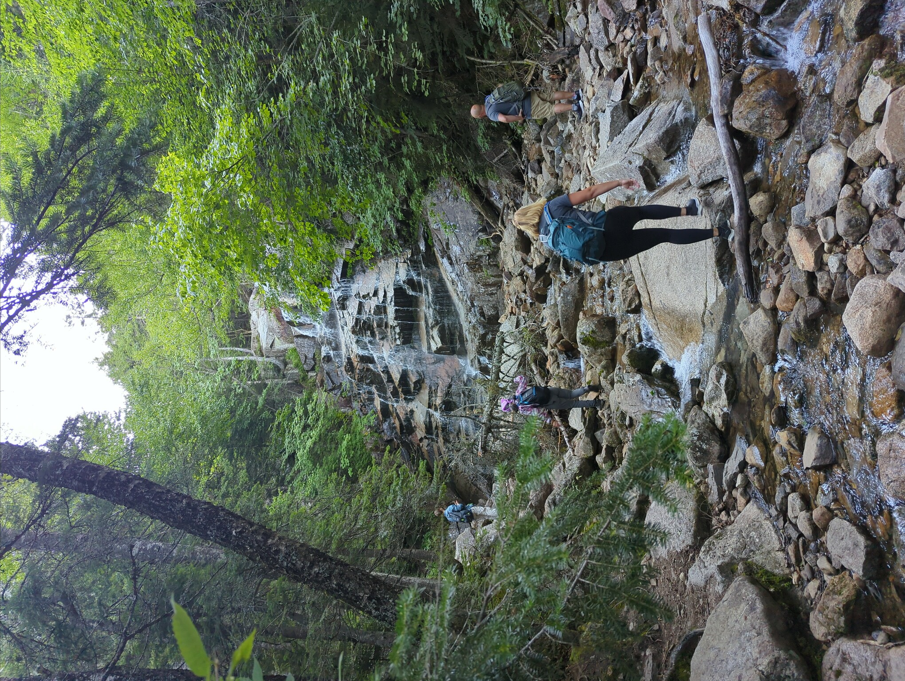
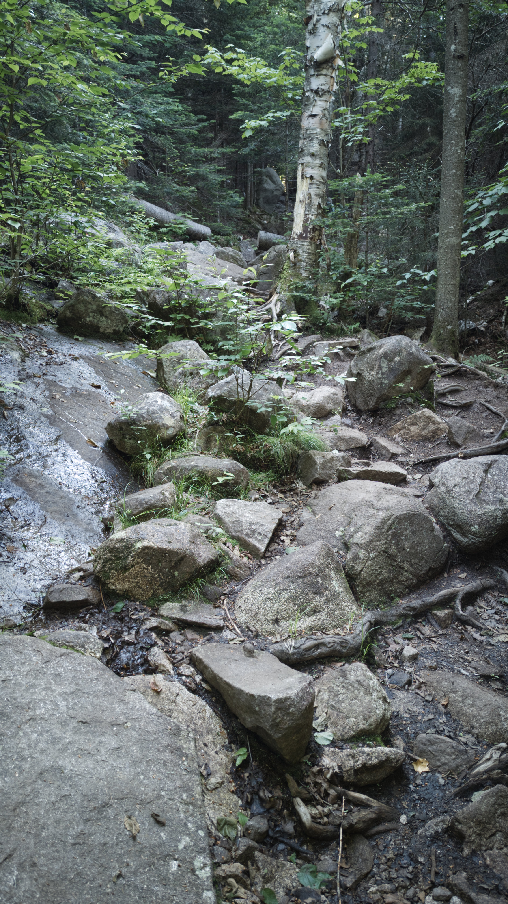

My Favorite Trails in the
White Mountain National Forest
By: Connor Tolderlund
Mount Lafayette and Franconia Ridge Trail Loop
| Distance | Elevation Gain | Time to Complete |
|---|---|---|
| 9.3 mi | 3,809 ft | 4h 56m |
This trail is considered one of the most scenic trails in New England. Several waterfalls and a roughly 1.5 mile ridgeline walk create some of the best scenery in the White Mountains. Additionally, the Greenleaf Appalachian Mountain Club hut is located on the descent of Old Bridle path, where hikers can refill water and buy snacks. The Appalachian Trail intersects this trail, so depending on the time of year, you may encounter some thru-hikers.
Mount Moosilauke and South Peak Loop
| Distance | Elevation Gain | Time to Complete |
|---|---|---|
| 8.2 mi | 2,506 ft | 3h 30m |
This trail is a moderate hike up Mt. Moosilauke. Although the stats seem tough, the trail is not bad for the White Mountains and is suitable for beginners. The summit of Mt. Moosilauke is a bit strange for the area; the summit is covered in alpine grasses instead of rocks. These grasses are very fragile, and many signs along the way remind hikers to stay on trail. This trail also intersects the Appalachian Trail.
Mount Osceola
| Distance | Elevation Gain | Time to Complete |
|---|---|---|
| 5.6 mi | 2,040 ft | 4h 0m |
A moderate trail to the summit of Mount Osceola in Wateville Valley. The summit of Osceola is known for its spectacular view east/south-east. This is one of the best hikes to do for a sunrise since the trail is not that long and the view eastward is amazing.
